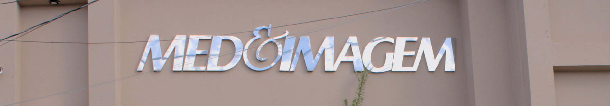

Este site é mantido e operado por Clínica de Ultrassonografia Sociedade Limitada - MedImagem, http://medimagem.med.br/.
Nós coletamos e utilizamos alguns dados pessoais que pertencem àqueles que utilizam nosso site. Ao fazê-lo, agimos na qualidade de controlador desses dados e estamos sujeitos às disposições da Lei Federal n. 13.709/2018 (Lei Geral de Proteção de Dados Pessoais - LGPD).
Nós cuidamos da proteção de seus dados pessoais e, por isso, disponibilizamos esta política de privacidade, que contém informações importantes sobre:
Nosso site somente deve ser utilizado por pessoas que tenham, pelo menos, 14 (quatorze) anos de idade, sendo que a utilização por pessoa com menos de 18 (dezoito) anos somente será possível mediante o consentimento de pelo menos um de seus pais ou responsável.
Nosso site coleta e utiliza alguns dados pessoais de nossos usuários, de acordo com o disposto nesta seção.
Nós coletamos os seguintes dados pessoais que nossos usuários nos fornecem expressamente ao utilizar nosso site:
A coleta destes dados ocorre nos seguintes momentos:
Será entregue no momento da coleta de dados na ficha de atendimento. Em caso de perda desses dados, só será entregue para o responsável do exame com apresentação de documento ou com autorização e apresentação de documento do responsável.
Os dados fornecidos por nossos usuários são coletados com as seguintes finalidades:
Para que os usuários possam acessar os laudos e imagens dos exames feitos no paciente.
O site poderá coletar os seguintes dados sensíveis dos usuários:
A coleta de dados sensíveis ocorre nos seguintes momentos:
Nos Laudos emitidos pelos médicos e nas Imagens dos Exames.
Estes dados são coletados com as seguintes finalidades:
Esses dados são coletados para garantir a segurança dos Exames feitos pelos pacientes.
A coleta e a utilização de dados pessoais sensíveis somente serão feitas com o consentimento específico e destacado de seus titulares, exceto, se for o caso, nas hipóteses em que a Lei Geral de Proteção de Dados permite o tratamento deste tipo de dados com fundamento em outras bases legais distintas do consentimento.
Em qualquer caso, o tratamento de dados pessoais sensíveis somente ocorrerá para atender a finalidades específicas expressas nesta política ou devidamente informadas ao usuário por outros meios.
Nós coletamos os seguintes dados de crianças e adolescentes:
A coleta de dados de crianças e adolescentes acontece nos seguintes momentos:
A Coleta desses dados no momento da Ficha de Atendimento presencial.
Os dados de crianças e de adolescentes que coletamos são utilizados exclusivamente com as seguintes finalidades:
Cookies são pequenos arquivos de texto baixados automaticamente em seu dispositivo quando você acessa e navega por um site. Eles servem, basicamente, para seja possível identificar dispositivos, atividades e preferências de usuários.
Os cookies não permitem que qualquer arquivo ou informação sejam extraídos do disco rígido do usuário, não sendo possível, ainda, que, por meio deles, se tenha acesso a informações pessoais que não tenham partido do usuário ou da forma como utiliza os recursos do site.
Os cookies do site são aqueles enviados ao computador ou dispositivo do usuário e administrador exclusivamente pelo site. As informações coletadas por meio destes cookies são utilizadas para melhorar e personalizar a experiência do usuário.
Alguns de nossos parceiros podem configurar cookies nos dispositivos dos usuários que acessam nosso site.
Estes cookies, em geral, visam possibilitar que nossos parceiros possam oferecer seu conteúdo e seus serviços ao usuário que acessa nosso site de forma personalizada, por meio da obtenção de dados de navegação extraídos a partir de sua interação com o site.
O usuário poderá obter mais informações sobre os cookies de terceiro e sobre a forma como os dados obtidos a partir dele são tratados, além de ter acesso à descrição dos cookies utilizados e de suas características, acessando o seguinte link:
As entidades encarregadas da coleta dos cookies poderão ceder as informações obtidas a terceiros.
AMBRA - https://access.ambrahealth.com/language/pt/privacy AMBRA - https://access.ambrahealth.com/language/pt/terms.html AMBRA - https://www.intelerad.com/en/legal/privacy-policy/ HERMES PARDINI - https://www.mypardini.com.br/politica-de-privacidade/ MOBILE MED - https://mobilemed.com.br/politica-de-privacidade/O usuário poderá se opor à utilização de cookies pelo site, bastando que os desative no momento em que começa a utilizar o serviço, seguindo as seguintes instruções:
Eventualmente, outros tipos de dados não previstos expressamente nesta Política de Privacidade poderão ser coletados, desde que sejam fornecidos com o consentimento do usuário, ou, ainda, que a coleta seja permitida com fundamento em outra base legal prevista em lei.
Em qualquer caso, a coleta de dados e as atividades de tratamento dela decorrentes serão informadas aos usuários do site.
Nós compartilhamos alguns dos dados pessoais mencionados nesta seção com terceiros.
Dados de Navegação são compartilhados com a empresa ambrahealth.com, intelerad.com, mypardini.com.br, mobilemed.com.br
Estes dados são compartilhados pelas seguintes razões e para as seguintes finalidades:
Os dados pessoais que coletamos serão armazenados e utilizados pelos seguintes períodos de tempo:
Vale dizer que, se houver alguma justificativa legal ou regulatória, os dados poderão continuar armazenados ainda que a finalidade para a qual foram coletados ou tenham sido tratados tenha se exaurido.
Uma vez finalizado o tratamento, observadas as disposições desta seção, os dados são apagados ou anonimizados.
Cada operação de tratamento de dados pessoais precisa ter um fundamento jurídico, ou seja, uma base legal, que nada mais é que uma justificativa que a autorize, prevista na Lei Geral de Proteção de Dados Pessoais.
Todas as Nossas atividades de tratamento de dados pessoais possuem uma base legal que as fundamenta, dentre as permitidas pela legislação. Mais informações sobre as bases legais que utilizamos para operações de tratamento de dados pessoais específicas podem ser obtidas a partir de nossos canais de contato, informados ao final desta Política.
Para garantir que o usuário que pretende exercer seus direitos é, de fato, o titular dos dados pessoais objeto da requisição, poderemos solicitar documentos ou outras informações que possam auxiliar em sua correta identificação, a fim de resguardar nossos direitos e os direitos de terceiros. Isto somente será feito, porém, se for absolutamente necessário, e o requerente receberá todas as informações relacionadas.
Empregamos medidas técnicas e organizativas aptas a proteger os dados pessoais de acessos não autorizados e de situações de destruição, perda, extravio ou alteração desses dados.
As medidas que utilizamos levam em consideração a natureza dos dados, o contexto e a finalidade do tratamento, os riscos que uma eventual violação geraria para os direitos e liberdades do usuário, e os padrões atualmente empregados no mercado por empresas semelhantes à nossa
Entre as medidas de segurança adotadas por nós, destacamos as seguintes:
Em perda do Login e Senha só será entregue pelo responsável do exame com apresentação de documento de Identidade ou com autorização do responsável e seu documento de identidade.
Informamos, ainda, que possuímos certificação ISO 27001. Seguimos, portanto, os mais elevados padrões técnicos de segurança da informação, a fim de que nos seja possível proteger os dados pessoais e não pessoais de nossos usuários.
Ainda que adote tudo o que está ao seu alcance para evitar incidentes de segurança, é possível que ocorra algum problema motivado exclusivamente por um terceiro - como em caso de ataques de hackers ou crackers ou, ainda, em caso de culpa exclusiva do usuário, que ocorre, por exemplo, quando ele mesmo transfere seus dados a terceiro. Assim, embora sejamos, em geral, responsáveis pelos dados pessoais que tratamos, nos eximimos de responsabilidade caso ocorra uma situação excepcional como essas, sobre as quais não temos nenhum tipo de controle.
De qualquer forma, caso ocorra qualquer tipo de incidente de segurança que possa gerar risco ou dano relevante para qualquer de nossos usuários, comunicaremos os afetados e a Autoridade Nacional de Proteção de Dados acerca do ocorrido, em conformidade com o disposto na Lei Geral de Proteção de Dados.
A presente versão desta Política de Privacidade foi atualizada pela última vez em: 30/11/2024
Reservamo-nos o direito de modificar, a qualquer momento, as presentes normas, especialmente para adaptá-las às eventuais alterações feitas em nosso site, seja pela disponibilização de novas funcionalidades, seja pela supressão ou modificação daquelas já existentes.
Sempre que houver uma modificação, nossos usuários serão notificados acerca da mudança.
Pela Lei Geral de Proteção de Dados, toda pessoa jurídica que realiza tratamento de dados pessoais deve nomear um Encarregado de Proteção de Dados Pessoais (Data Protection Officer - DPO) . Trata-se da pessoa indicada pelo Controlador e Operador para atuar como canal de comunicação entre o Controlador, os Titulares dos Dados e a Autoridade Nacional de Proteção de Dados (ANPD).
Para esclarecer quaisquer dúvidas sobre esta Política de Privacidade ou sobre os dados pessoais que tratamos, entre em contato com nosso Encarregado de Proteção de Dados Pessoais ou Data Protection Officer - DPO, por algum dos canais mencionados abaixo:
Chrismarcos Cruvinel Queiroz
Skype: chrismarcoscq
Email: tsidpo@tsidpo.eti.br
Telefone: +55 (35) 9-9946-0045